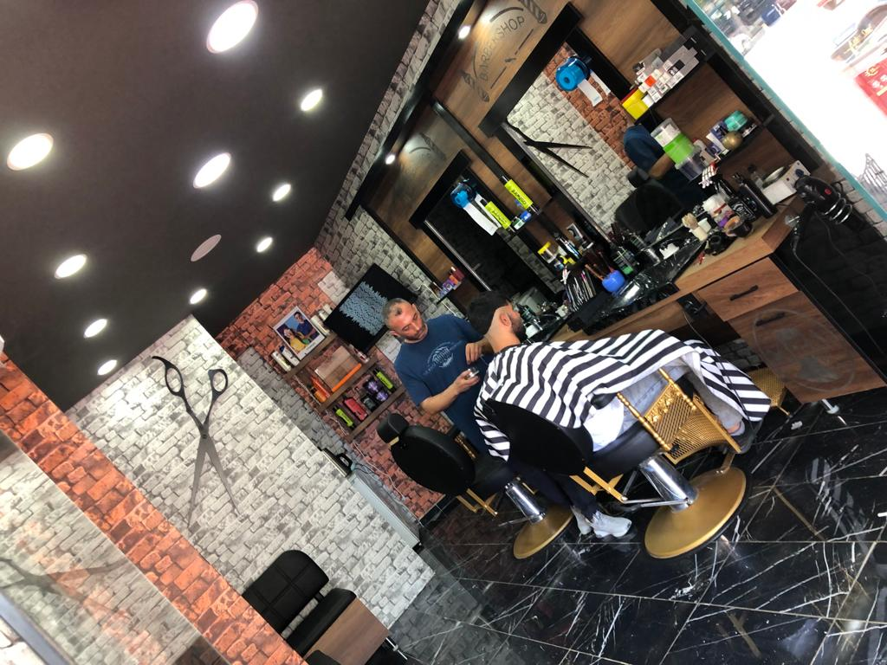
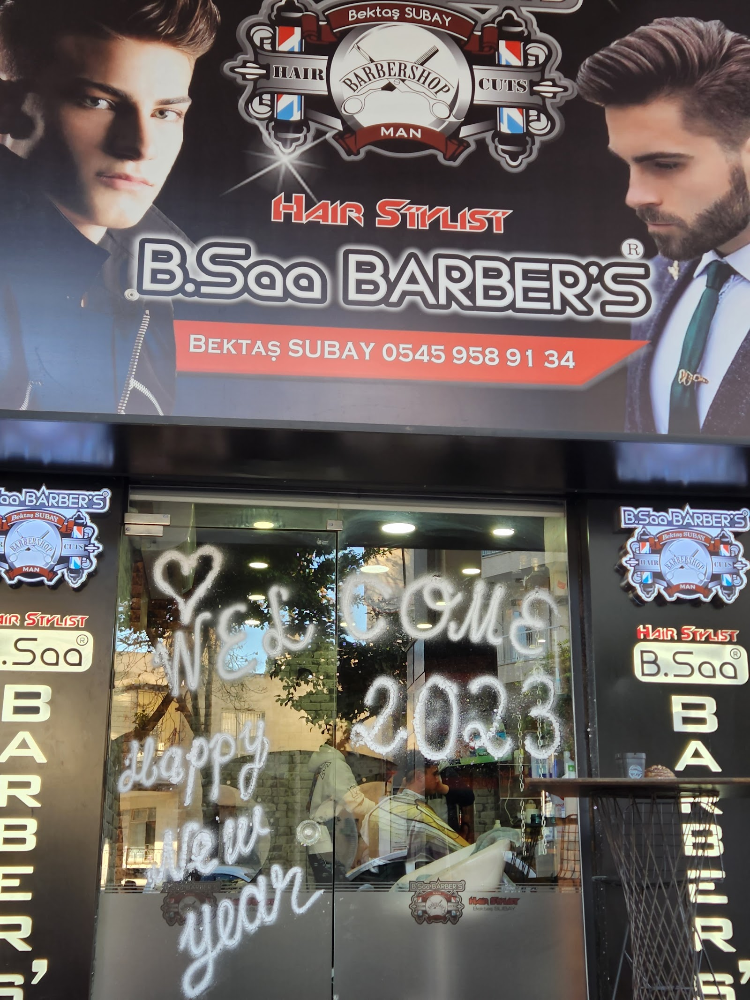
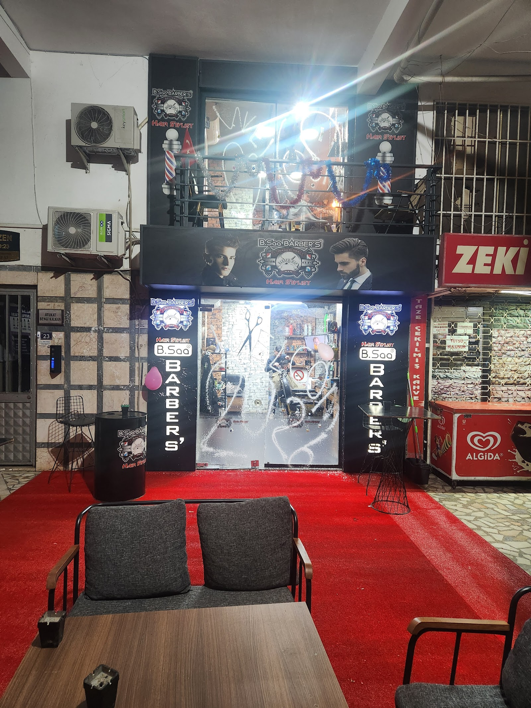
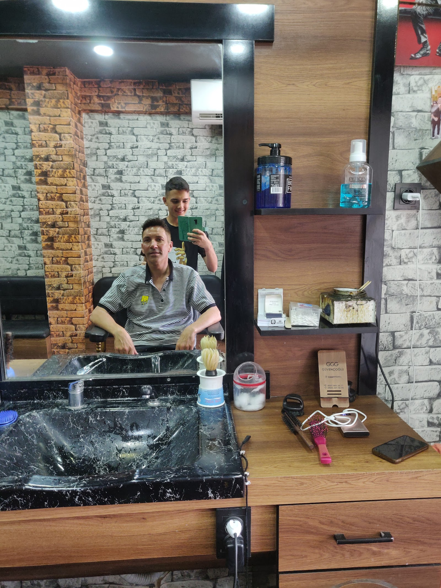

YÜZ ŞEKLİNE GÖRE MODEL
Size hangi saç modeli yakışır?
Yüz şeklinizi seçin; size yakışan modelleri fotoğraflarıyla görün, beğendiğinizi randevunuza ekleyin.

Yüz şeklinizi seçin; size yakışan modelleri fotoğraflarıyla görün, beğendiğinizi randevunuza ekleyin.
Hizmeti, günü ve boş saati seçin. Randevunuz WhatsApp'tan onaylanır, takviminize hatırlatma düşer.
Dolu saatler üstü çizili görünür.
5 tıraşa 1 tıraş bizden. Kart telefonunuzda, kaybolmaz.
Yayında her randevu sonrası damga otomatik eklenir.
Yüz hattınıza ve isteğinize göre, temiz ve düzenli bir kesim.
Sakalınız şekillendirilir, hatları düzgün ve bakımlı hale getirilir.
Doğal görünümü koruyan, ölçülü ve düzgün kaş düzeltme.
Özel gününüz öncesinde saç ve sakal için ayrıntılı bakım.
Tıraş sonrası yüzünüzü canlandıran, rahatlatıcı bakım.
Kesimin ardından saç yıkama ve günlük kullanıma uygun şekillendirme.




Müşterilerimiz saç kesimini, sakal tıraşını ve kaş alımını özenli ve temiz işçilik olarak anlatıyor.
Dükkana girdiğinizde sıcak bir karşılama ve çay kahve ikramıyla rahat bir ortam sizi bekliyor.
Ekip, dükkan sahibinin kendi yetiştirdiği ustalardan oluşuyor. Her koltukta aynı özen ve işçilik anlayışı var.
Şehir dışından gelenlere de ilgi gösteriliyor. Bektaş Bey'in yol tarifi için zaman ayırması müşterilerimizin sık andığı bir ayrıntı.
📍 Antalya Kızılsaray mah milli egemenlik cad 63 sok ali özen apt no:23 MURATPAŞA/ANTALYA 07040, Kızılsaray, 07000 Muratpaşa/Antalya
🕑 Pzt 09:00–23:00 · Sal 09:30–23:30 · Çar 09:00–23:30 · Per 09:00–23:00 · Cum 09:00–23:30 · Cmt 09:00–23:00 · Paz kapalı